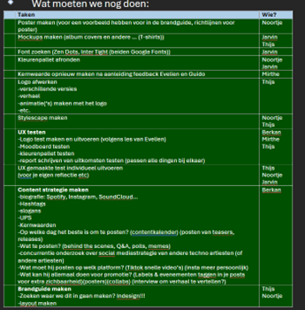
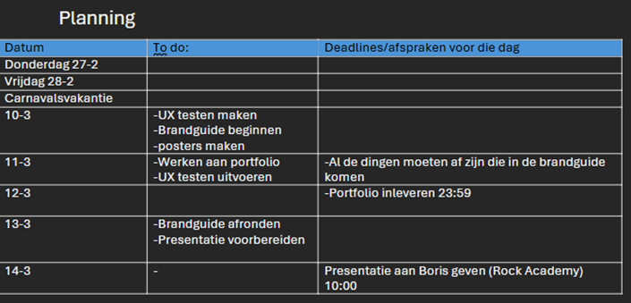

Communicatie met Boris
Op 21 februari hadden we een feedbackmoment met Boris. Tijdens deze meeting heb ik het voortouw genomen in de organisatie en uitvoering. Ik:
- Heb een groepschat opgezet met Boris
- Vooraf voorgesteld om het gesprek op te nemen en dit netjes aan Boris gevraagd
- De rollen binnen ons team verdeeld
- Heb een groot deel van de PowerPointpresentatie en de vragenlijst opgesteld
Hieronder staan nog screenshots van de chat als ‘bewijs’
Planning en Trello
In mijn groepje waren we in de tweede week het overzicht kwijt wat we allemaal moesten doen en wat we gedaan hebben. Dit was vooral verwarrend voor Noortje aangezien die vaak ziek was. Ik heb hierop een planning gemaakt in Word. Ik heb ook geprobeerd deadlines te plannen. Eerst gebruikte we Trello, maar dit werd een beetje in de steek gelaten. Hierover heb ik ook een reflectie geschreven.
 Reflectie waarom we geen Trello gebruiken
Tijdens dit project vond ik het lastig om Trello goed te gebruiken. In eerdere projecten werkten we met Jira, wat toen goed ging, maar later minder goed werd bijgehouden. In dit project vonden we het lastig om taken goed te definiëren, zeker omdat het project in het begin vaag was en er steeds nieuwe taken bijkwamen. Bovendien werkten we allemaal aan dezelfde onderdelen, zoals interviews, waardoor het lastig was om onderscheid te maken in Trello. Daarom heb ik een takenlijst in Word gemaakt, inclusief een soort agenda. Dit hielp om overzicht te krijgen. Deadlines inschatten vond ik lastig, omdat ik niet wist hoe lang taken zouden duren. Voor een volgend project lijkt het me nuttig om beide systemen te combineren: een duidelijke takenlijst in Word en Trello of Jira voor het teamoverzicht.
Contactmoment Boris
Tijdens het feedback-/interviewmoment met Boris presenteerden we drie geselecteerde stylescapes en logo’s. Aangezien mijn ontwerpen sterk leken op die van Noortje en haar stijl algemener was, besloten we haar werk op te nemen in de PowerPoint. Hieronder volgt een samenvatting van het gesprek.
Samenvatting Interview met Boris 21-2
We presenteerden drie stylescapes. Boris vond vooral de eerste en derde erg sterk. Het mysterieuze lettertype uit stylescape 2 sprak hem ook aan. Hij stelde voor om elementen uit stylescape 1 en 3 te combineren. Het logo vond hij visueel aantrekkelijk en het gebruikte lettertype "cool en mysterieus". Wel gaf hij aan dat hij graag één kleurvariant zou willen voor alle logo’s.
De afbeelding hierboven geeft een font weer. Deze font vond hij ook mooi als meer een algemeen font. We bespraken ook zijn voorkeur voor "hoge contrasten". Hij bedoelde daarmee festivalachtige kleuren, zoals die op zijn albumcovers (voorbeeld werd getoond).
Reflectie
We hebben duidelijke en relevante dingen laten zien. De taakverdeling binnen het team verliep soepel en gestructureerd, wat zorgde voor minder chaos. Dankzij de goede voorbereiding (selectie stylescapes, PowerPoint, vragenlijst) verliep het gesprek efficiënt. We hadden zelfs minder tijd nodig dan gepland. Het interview gaf ons waardevolle inzichten in Boris’ voorkeuren op het gebied van huisstijl en logo. Dat helpt enorm bij de verdere uitwerking van de branding.
Planning UX
Na aanleiding van het branding project en de mislukte Trello heb ik dit project gelijk een planning gemaakt. Ik begon eerst een weekplanning te maken. Wat we ongeveer moesten doen per week vervolgens ook een dagplanning wat eigenlijk alleen een overzicht was met de reviews en vrije dagen, maar wel fijn om te zien hoe de weken zijn verdeeld.
Hierop heb ik taken gemaakt en in Trello gezet. Alle taken stonden eerst in een to do lijstje. Daarnaast heb ik een ‘in progress’, ‘feedback gewenst’ en ‘done’ lijst gemaakt. Alle taken zijn ook aan een persoon gekoppeld . Ik heb ook gekeken naar deadlines en begin taak datum. De huidige Trello staat hieronder:
Na het feedback van Anke was het goed voor een beginplanning. Wel zou het slim zijn op de taken per week op te splitsen in een lijst. Dit heb ik vervolgens gedaan en ziet het er heel overzichtelijk uit. Over het algemeen gaat het heel goed met het gebruiken van de trello. Het wordt goed bijgewerkt en het geeft een duidelijk overzicht wie waar mee bezig is.
Wanneer vind ik dat het gebruik van Trello een succes is?
Ik vind dat het een succes is als we allemaal Trello bijwerken. Dat de taken worden aangepast en naar de juiste lijst word gezet. Ook wanneer we aan het eind van het project niet alles van de ‘to do’ naar ‘done hoeven te slepen. Dit gebeurd vaak wanneer ik Trello heb gebruikt in een groepsopdracht en dit als laatste doe.
Onderzoek UX
Voor het UX project heb ik ondezoek gedaan naar 2 beperkingen
Dit onderzoek is beschikbaar in een document. Klik op de onderstaande knop om het te bekijken.
Rapport UX test
Tijdens het development project heb ik samen met Jarvin een UX test gedaan.
Dit rapport is beschikbaar in een document. Klik op de onderstaande knop om het te bekijken.